ÖZBEKÝSTAN
/ UZBEKISTAN
by
Esra
Bayoglu (July 2000)
Also see the Independent
Travel Guide to Uzbekistan and Kyrgyzstan
Fotoðraf
Galerisi / Photo
Gallery
Fotoðraflarý daha büyük
görmek icin üzerine tiklayýnýz /
Click on a photo to
view a larger version
Taþkent
/ Tashkent
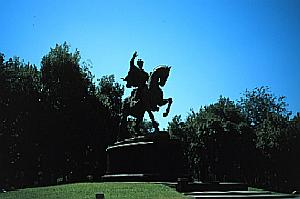
Timur Lenk
/ Tamerlane
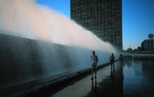
Mustakillik Meydaný
/ Mustaqillik Square
Semerkant
/ Samarkand
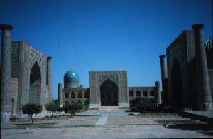
Registan: Giriþleri
bu meydana bakan, ayrý zamanlarda inþaa edilmiþ üç medrese.
The Registan with
its three medressas (academies)
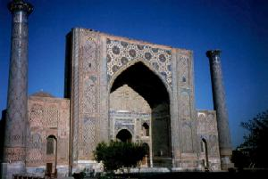
Uluðbey Medresesi
(1420), Registan / Ulughbek Medressa (1420),
Registan
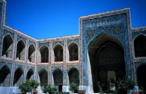
Uluðbey Medresesi
avlusu / Inner courtyard of the Ulughbek Medressa
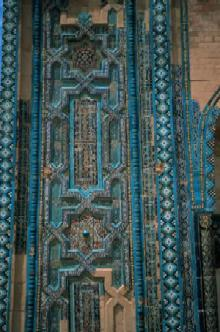
Þahr-i-Zindah'da mezarlýðýnda
bir türbe mozayiði
Tilework at a Shahr-i-Zindah
shrine
Uluðbey Gözlemevi'nde
öðle yemeði: lagman (Çinden gelme makarna çorbasý) ve yeþil çay
Lunch near the Ulughbek
Observatory: laghman and green tea
Buhara
/ Bukhara

Buhara'dan genel görünüm
/ Skyline of Bukhara
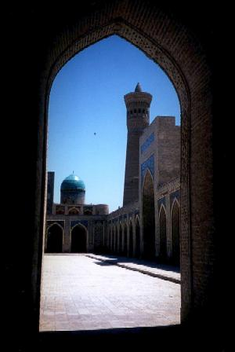
Kalon Camii ve Minare
/
Kalon
Mosque and Minaret
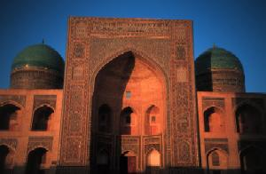
Mir-i-Arab Medresesi
/ Mir-i-Arab Medressa
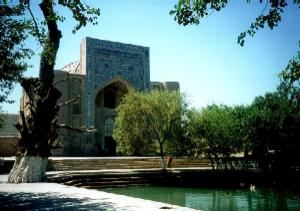
Lab-i-Havuz
/ Lab-i-Hauz (pool)
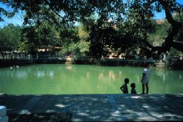
Lab-i-Havuz
/ Lab-i-Hauz (pool)
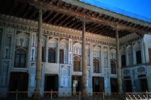
Emir'in Sarayýnda
bir ayvan / Eyvan of Makhosa (Emir's Palace)
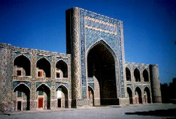
Abdullah Han Medresesi
/ Abdullah Khan Medressa
{kind=link}
{kind=link}
{kind=link}
{kind=link}
{kind=link}

{kind=link}
{kind=link}
{kind=link}
{kind=link}
{kind=link}
{kind=link}